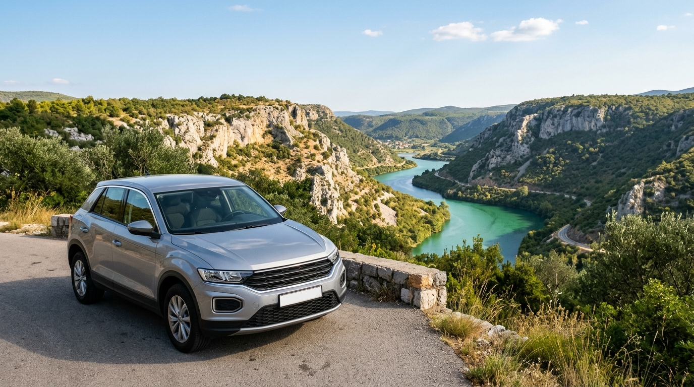

Balkanlar'ın en büyüleyici sürüş rotası olan Neretva Kanyonu boyunca Saraybosna'dan Konjic, Jablanica, Mostar Köprüsü, Blagaj Alperenler Tekkesi, tarihi Poçitel Köyü ve Kravice Şelaleleri'ni tek günde veya konaklamalı gezmenin en özgür yolu sınırsız kilometreli kiralık araçtır. SJJ Havalimanı çıkışından M-17 karayolu ile Mostar 125 km (yaklaşık 2 saat 10 dakika) sürer.
2026 Güncel Araç Filosu, Kasko ve Günlük Kiralama Fiyatları
| Araç Grubu | Şanzıman | Günlük Başlangıç | Kredi Kartı Blokajı | Güvence & KM |
|---|---|---|---|---|
| Ekonomik Şehir Filosu | Otomatik | 35€ / gün | 0€ Kart Blokesi (Nakit / Kart) | Tam Kasko (SCDW) • Sınırsız KM |
| Kompakt & Geniş Sedan | Otomatik | 45€ / gün | 0€ Kart Blokesi (Nakit / Kart) | Tam Kasko (SCDW) • Sınırsız KM |
| SUV & Balkan Aile Paketi | Otomatik | 60€ / gün | 0€ Kart Blokesi (Nakit / Kart) | Tam Kasko • Kış Paketi • Mostar Uyumlu |
| VIP Minibüs (7–9 Kişilik) | Otomatik / Manuel | 80€ / gün | Esnek Kurumsal Güvence | Tam Kasko • Geniş Bagaj • Grup Transferi |
1. Kredi Kartsız ve 1.500€ Provizyon Blokesiz Kiralama Avantajı
Saraybosna'da pek çok aracı platform, araç teslimi sırasında sürücü adına kayıtlı kredi kartından 1.200€ ile 2.000€ arasında yüksek provizyon (depozito) blokesi talep eder. MCAN AUTO d.o.o. olarak misafirlerimizin tatil bütçesini kilitlemiyoruz: kiralama bedelini uçaktan indiğinizde nakit (Euro veya Bosna Markı - BAM) ya da standart banka kartıyla ödeyebilir, sürpriz ek masraf olmadan aracınızı 5 dakikada teslim alabilirsiniz.
2. Saraybosna Havalimanı (SJJ), Ilidža ve Başçarşı 7/24 Teslimat
Merkez ofisimiz (Igmanskog bataljona br. 11, 71210 Ilidža) Saraybosna Uluslararası Havalimanı'na (SJJ) sadece 5 dakika sürüş mesafesindedir. Uçağınız gece yarısı inse veya rötar yapsa bile uçuş kodunuz ekibimizce takip edilir; gelen yolcu çıkışında birebir karşılanarak kağıt işleriyle vakit kaybetmeden yola çıkarsınız. Dilerseniz Başçarşı (Stari Grad) ve Sarajevo Centar otellerine de adrese teslim sağlıyoruz.
3. Gerekli Belgeler: Yeni Tip Türk Ehliyeti ve Yaş Şartı
Bosna-Hersek'e vizesiz veya kimlikle/pasaportla seyahat eden Türkiye Cumhuriyeti vatandaşları için yeni tip çipli Türk ehliyeti %100 geçerlidir; ayrıca uluslararası sürücü belgesi çıkarmanıza gerek yoktur. Ekonomik ve kompakt araç gruplarımızda minimum 21 yaş ve en az 2 yıllık geçerli ehliyet şartı aranmaktadır.
4. Mostar, Jahorina ve Komşu Ülkelere Geçiş (Yeşil Sigorta / Green Card)
Kiraladığınız araçla Mostar Köprüsü, Blagaj Tekkesi, Poçitel, Kravice Şelalesi, Travnik ve Jahorina Kayak Merkezi rotalarını sınırsız kilometre avantajıyla gezebilirsiniz. Seyahat planınızda Karadağ (Kotor, Budva) veya Hırvatistan (Dubrovnik) sınır geçişi varsa rezervasyon anında WhatsApp'tan bildirmeniz yeterlidir; sınır kapısında zorunlu olan uluslararası Yeşil Sigorta (Green Card / Zeleni karton) belgeniz teslimattan önce hazırlanır.
Sık Sorulan Sorular
Saraybosna ile Mostar arası kiralık araçla kaç saat sürer, yol durumu nasıl?
Saraybosna (Ilidža / SJJ) çıkışından yeni A1 otoyolu bağlantısı ve M-17 Neretva kanyon yolu tamamen düzgün asfalttır; mola vermeden yaklaşık 2 saat 10 dakika sürer.
Aynı gün içinde Konjic, Mostar, Blagaj, Poçitel ve Kravice gezilebilir mi?
Evet. Sabah erken çıkışla sırasıyla Konjic Köprüsü, Mostar Eski Köprü, Blagaj Tekkesi (Mostar'a 15 dk), Poçitel (25 dk) ve Kravice Şelalesi (40 dk) rahatlıkla gezilip akşam Saraybosna'ya dönülebilir.
Mostar ve Kravice otoparklarında nelere dikkat edilmeli?
Resmi belediye veya biletli otoparkları tercih etmeniz ve araç içinde görünür çanta bırakmamanız önerilir; ekibimiz teslimatta güncel Google Maps otopark pinlerini paylaşır.
Mostar rotasından sonra Hırvatistan veya Karadağ'a devam edebilir miyim?
Evet, önceden bildirmeniz halinde Yeşil Sigorta (Green Card) belgesiyle Karadağ (Kotor) veya Hırvatistan sınırından sorunsuz geçebilirsiniz.